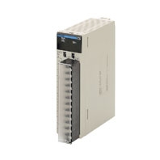
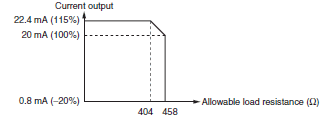

The specifications shown in the following table apply to all the CS-series Process Analog I/O Units.
Building Automation
Industrial Automation
Power Automation & Safety


Bangladesh Distributor
CS1W-PMV
SYSMAC CS-series Process Analog I/O Units

Provides the functionality of isolators, power supplies, signal converters, and other devices.
about this Product Family
Related Contents
- Automation Systems
- Programmable Controllers
- Features
- Lineup
- Specifications
- Dimensions
- Catalog
last update: September 24, 2012
General Specifications
| Item | Specification |
|---|---|
| Applicable PLC | CS-series PLCs |
| Unit type | CS-series Special I/O Unit |
| Structure | Backplane-mounted, single slot size |
| Dimensions | 35 × 130 × 126 mm (W × H × D) |
| Weight | 450 g max. |
| External connection terminals | 21-point removable terminal block (M3 screws, Tightening torque: 0.5 Nm) |
| Unit number switch setting | 00 to 95 |
| Self-diagnosis function | Results of self-diagnosis shown on indicators. |
| Mountable Racks | CPU Rack or CS-series Expansion Rack |
| Maximum number of Units | 80 Units (10 Units × 8 Racks) Confirm that the total current consumption of all the Units (including the CPU Unit) mounted to a single CPU Rack or Expansion Rack does not exceed the maximum power supply capacity of the Power Supply Unit. |
| Ambient operating temperature | 0 to 55 ° C |
| Ambient operating humidity | 10% to 90% (with no condensation) |
Current consumption
| Name | Model | Current consumption (power) | |
|---|---|---|---|
| 5 V | 26 V | ||
| Isolated-type Analog Output Unit | CS1W-PMV01 | 0.15 A (0.75 W) | 0.16 A (4.2 W) |
| CS1W-PMV02 | 0.12 A (0.60 W) | 0.12 A (3.2 W) | |
(Reference) Maximum current and total power supplied
| Power Supply Unit | Maximum current supplied (power) | Maximum total power | ||
|---|---|---|---|---|
| 5 V | 26 V | 24 V | ||
| C200HW-PA204 | 4.6 A (23 W) | 0.6 A (15.6 W) | None | 30 W |
| C200HW-PA204C | 4.6 A (23 W) | 0.6 A (15.6 W) | None | 30 W |
| C200HW-PA204S | 4.6 A (23 W) | 0.6 A (15.6 W) | 0.8 A (19.2 W) | 30 W |
| C200HW-PA204R | 4.6 A (23 W) | 0.6 A (15.6 W) | None | 30 W |
| C200HW-PD024 | 4.6 A (23 W) | 0.6 A (15.6 W) | None | 30 W |
| C200HW-PA209R | 9 A (45 W) | 1.3 A (33.8 W) | None | 45 W |
| C200HW-PD025 | 5.3 A | 1.3 A | None | 40 W |
| CS1D-PA207R | 7 A (35 W) | 1.3 A (33.8 W) | None | 35 W |
| CS1D-PD024 | 4.3 A (21.5 W) | 0.56 A (14.6 W) | None | 28 W |
| CS1D-PD025 | 5.3 A | 1.3 A | None | 40 W |
CS1W-PMV01 Isolated-type Analog Output Unit
Specifications
| Item | Specifications | |
|---|---|---|
| Model | CS1W-PMV01 | |
| Applicable PLC | CS Series | |
| Unit type | CS-series Special I/O Unit | |
| Mounting position | CS-series CPU Rack or CS-series Expansion Rack (Cannot be mounted to C200H Expansion I/O Rack or SYSMAC BUS Remote I/O Slave Rack.) |
|
|
Maximum number of Units |
80 (within the allowable current consumption and power consumption range) | |
| Unit numbers | 00 to 95 (Cannot duplicate Special I/O Unit numbers.) | |
|
Areas for data exchange with CPU Unit |
Special I/O Unit Area |
10 words/Unit CPU Unit to Analog Output Unit: Analog output values for each output Analog Output Unit to CPU Unit: Answer input values for each output, output disconnection |
|
DM Area words allocated to Special I/O Units |
100 words/Unit CPU Unit to Analog Output Unit: Output hold for when CPU Unit error occurs, high/low limit values, rate-of-change limit values (positive and negative directions), number of values for answer input moving average, zero/span adjustment for control outputs and answer inputs, etc. |
|
| Number of outputs | 4 | |
| Output signal types | Either 4 to 20 mA or 1 to 5 V (separate for each of the four outputs). Switched according to the connection terminals. |
|
|
User-defined scaling in industrial units |
None | |
|
Data storage in the CIO Area |
0 to 4,000 (0000 to 0FA0 hex), fixed 0: 4 mA or 1 V; 4,000: 20 mA or 5 V The values derived from carrying out the following processing in order of the values in the allocated words in the CIO Area are output in analog. 1) Output hold → 2) Rate-of-change limit → 3) Zero/span adjustment → 4) High/low limits Therefore, the values after processing are confirmed by analog inputs. |
|
| Accuracy (25 ° C) | When 4 to 20 mA: ± 0.1% of full scale When 1 to 5 V: ± 0.2% of full scale |
|
|
Temperature coefficient |
± 0.015%/ ° C of full scale | |
| Resolution | 1/4,000 of full scale | |
| Warmup time | 10 min | |
| Output response time | 0.2 s (travel time from output 0% to 100%, for step output) | |
| D/A conversion period | 100 ms/4 outputs | |
|
Maximum time to store data in CPU Unit |
Conversion period + one CPU Unit cycle | |
| Output signal range | Approx. - 20 to 115% | |
|
Allowable load resistance |
When 4 to 20 mA: 404 Ω max. (when output range is - 20 to 115%) or 458 Ω max. (when output range is - 20 to 100%) (Refer to note.) When 1 to 5 V: 250 k Ω max. |
|
| Output impedance | When 1 to 5 V: 250 Ω (typical) | |
|
Voltage when open between terminals |
Approx. 15 V | |
| Answer input function | The actual analog output values (4 to 20 mA or 1 to 5 V) from the Unit's output terminals can be read. Data stored to allocated words of CIO Area: 0 to 4,000 (0000 to 0FA0 hex), fixed. (When 4 mA or 1 V: 0; when 20 mA or 5 V: 4,000) Accuracy: ± 0.2% of full scale Resolution: 1/2000 Temperature coefficient: ± 0.015%/ ° C |
|
|
Current output disconnection detection function |
When the actual output of 4 to 20 mA from the Analog Output Unit's output terminals is 0.5 mA or less, it is regarded as an external output circuit current loop disconnection, and the Output Disconnection Flag turns ON. |
|
| Function |
Rate-of- change limit |
This function can be used to control the speed of up and down changes in analog output values. |
|
Output high/ low limits |
This function can be used to place high and low limits on analog output values. | |
|
Output hold |
This function holds the analog output value to the previous value or to a specified preset value when any of the following CPU Unit errors occurs, and outputs the analog output value in the CIO Area when the error is cleared. CPU Unit fatal error (including FALS execution) CPU error in CPU Unit All outputs turned OFF with Output OFF Bit |
|
| Isolation | Between outputs and between output terminals and PLC signals: Isolation by transformer and photocoupler | |
| Insulation resistance | 20 M Ω (at 500 V DC) between outputs | |
| Dielectric strength | Between outputs: 1,000 V AC, at 50/60 Hz, for 1 min, leakage current 10 mA max. | |
| External connections | Terminal block (detachable) | |
| Unit number settings | Set by rotary switches on front panel, from 0 to 95. | |
| Indicators | Three LED indicators on front panel (for normal operation, errors detected at the Analog Output Unit, and errors related to the CPU Unit). |
|
| Front panel connector | Output connector terminal block (detachable) | |
|
Effect on CPU Unit cycle time |
0.3 ms | |
| Current consumption | 5 V DC at 150 mA max., 26 V DC at 160 mA max. | |
| Dimensions | 35 × 130 × 126 mm (W × H × D) Note: The height including the Backplane is 145 mm. |
|
| Weight | 450 g max. | |
| Standard accessories | None | |
Note: The following diagram shows the relationship between the allowable load resistance and the current output.

Output Values According to CPU Unit Status
Analog output values from the Analog Output Unit will be as shown in the following table, depending on the status of the CPU Unit.
| CPU Unit status | Analog output values from Unit | |
|---|---|---|
| Fatal error (including FALS(007) execution) | The output hold function holds the previous value or a specified preset value. | |
| CPU error | ||
| All outputs turned OFF with Output OFF Bit | ||
| Change of operation mode from RUN or Monitor to Program (See note.) |
When the CPU Unit's I/O Memory Hold Flag (A500.12) is OFF. |
The output value in the CIO Area is cleared, and that value (0000 hex) is output refreshed. |
| When the CPU Unit's I/O Memory Hold Flag (A500.12) is ON. |
The output value in the CIO Area is held at the value prior to the operation mode change, and that is output refreshed. |
|
| Fatal error or CPU standby after turning ON the power supply |
Either 0 mA or 0 V is output. | |
| Special I/O Unit cyclic refresh disabled | Outputs can be refreshed by means of IORF(097) in the ladder diagram program. | |
Note: Regardless of the CPU Unit's operation mode (including Program Mode), the analog output value in the allocated
words of the CIO Area is always output refreshed. As shown in the above table, however, when the operation
mode is changed to Program Mode, the analog output value in the CIO Area is either cleared or held depending
on the status of the CPU Unit's I/O Memory Hold Flag (A500.12). In particular, be careful when this flag is ON,
because the value prior to the mode change will be held and that value will be output refreshed.
words of the CIO Area is always output refreshed. As shown in the above table, however, when the operation
mode is changed to Program Mode, the analog output value in the CIO Area is either cleared or held depending
on the status of the CPU Unit's I/O Memory Hold Flag (A500.12). In particular, be careful when this flag is ON,
because the value prior to the mode change will be held and that value will be output refreshed.
CS1W-PMV02 Isolated-type Analog Output Unit
Specifications
| Item | Specifications | |
|---|---|---|
| Model | CS1W-PMV02 | |
| Applicable PLC | CS Series | |
| Unit type | CS-series Special I/O Unit | |
| Mounting position | CS-series CPU Rack or CS-series Expansion Rack (Cannot be mounted to C200H Expansion I/O Rack or SYSMAC BUS Remote I/O Slave Rack.) |
|
|
Maximum number of Units |
80 (within the allowable current consumption and power consumption range) | |
| Unit numbers | 00 to 95 (Cannot duplicate Special I/O Unit numbers.) | |
|
Areas for data exchange with CPU Unit |
Special I/O Unit Area |
10 words/Unit CPU Unit to Analog Output Unit: Analog output values for each output Analog Output Unit to CPU Unit: None |
|
DM Area words allocated to Special I/O Units |
100 words/Unit CPU Unit to Analog Output Unit: Output hold for when CPU Unit error occurs, high/low limit values, rate-of-change limit values, zero/span adjustment for control outputs, etc. |
|
| Number of outputs | 4 | |
| Output signal types | 0 to 10 V, 0 to 5 V, 0 to 1 V, - 10 to 10 V, - 5 to 5 V, - 1 to 1 V (Each output point can be set individually.) |
|
|
User-defined scaling in industrial units |
Scaling is possible for each of the above signal types individually. (The data corresponding to the minimum and maximum output values can be set freely.) |
|
|
Data storage in the CIO Area |
± 32,000 (8300 to FFFF hex, 0000 to 7D00 hex) | |
| Accuracy (25 °C) | ± 0.1% of full scale | |
| Temperature coefficient | ± 0.015%/ ° C of full scale | |
| Resolution | - 10 to 10 V, - 1 to 1 V: 1/16,000 of full scale 0 to 10 V, 0 to 1 V, - 5 to 5 V: 1/8,000 of full scale 0 to 5 V: 1/4,000 of full scale |
|
| Warmup time | 10 min | |
| Output response time | 50 ms max. (travel time from output 0% to 90%, for step output) | |
| D/A conversion period | 40 ms/4 outputs | |
|
Maximum output delay time |
Output response time + conversion period + one CPU Unit cycle | |
| Output signal range | - 15 to 115% ( - 7.5 to 107.5% for ± 10-V and ± 1-V ranges) | |
| Allowable load resistance | 10 k Ω min. | |
| Output impedance | 0.5 Ω max. | |
|
Voltage when open between terminals |
--- | |
| Answer input function | None | |
|
Current output disconnection detection function |
None | |
| Function |
Rate-of- change limit |
This function can be used to control the speed of up and down changes in analog output values. |
|
Output high/ low limits |
This function can be used to place high and low limits on analog output values. | |
|
Output hold |
This function holds the analog output value to the previous value or to a specified preset value when any of the following CPU Unit errors occurs. Normal operation is restored when the CPU Unit error is cleared. CPU Unit fatal error (including FALS execution) CPU error in CPU Unit CPU Unit's load interrupted |
|
| Isolation | Between outputs and between output terminals and PLC signals: Isolation by transformer and photocoupler | |
| Insulation resistance | 20 M Ω (at 500 V DC) between outputs | |
| Dielectric strength | Between outputs: 1,000 V AC, at 50/60 Hz, for 1 min, leakage current 10 mA max. | |
| External connections | Terminal block (detachable) | |
| Unit number settings | Set by rotary switches on front panel, from 0 to 95. | |
| Indicators | Three LED indicators on front panel (for normal operation, errors detected at the Analog Output Unit, and errors related to the CPU Unit). |
|
| Front panel connector | Output connector terminal block (detachable) | |
|
Effect on CPU Unit cycle time |
0.3 ms | |
| Current consumption | 5 V DC at 120 mA max., 26 V DC at 120 mA max. | |
| Dimensions | 35 × 130 × 126 mm (W × H × D) Note: The height including the Backplane is 145 mm. |
|
| Weight | 450 g max. | |
| Standard accessories | None | |
Output Values According to CPU Unit Status
Analog output values from the Analog Output Unit will be as shown in the following table, depending on the status of the CPU Unit.
| CPU Unit status | Analog output values from Unit | |
|---|---|---|
| Fatal error (including FALS(007) execution) | The output hold function holds the previous value or a specified preset value. | |
| CPU error | ||
| All outputs turned OFF with Output OFF Bit | ||
| Change of operation mode from RUN or Monitor to Program (See note.) |
When the CPU Unit's I/O Memory Hold Flag (A500.12) is OFF. |
The output value in the CIO Area is cleared, and that value (0000 hex) is output refreshed. |
| When the CPU Unit's I/O Memory Hold Flag (A500.12) is ON. |
The output value in the CIO Area is held at the value prior to the operation mode change, and that is output refreshed. |
|
| Fatal error or CPU standby after turning ON the power supply |
0 V is output. | |
| Special I/O Unit cyclic refresh disabled | Outputs can be refreshed by means of IORF(097) in the ladder diagram program. | |
Note: Regardless of the CPU Unit's operation mode (including Program Mode), the analog output value in the allocated
words of the CIO Area is always output refreshed. As shown in the above table, however, when the operation
mode is changed to Program Mode, the analog output value in the CIO Area is either cleared or held depending
on the status of the I/O Memory Hold Flag (A500.12). In particular, be careful when this flag is ON, because the
value prior to the mode change will be held and that value will be output refreshed.
words of the CIO Area is always output refreshed. As shown in the above table, however, when the operation
mode is changed to Program Mode, the analog output value in the CIO Area is either cleared or held depending
on the status of the I/O Memory Hold Flag (A500.12). In particular, be careful when this flag is ON, because the
value prior to the mode change will be held and that value will be output refreshed.
last update: September 24, 2012